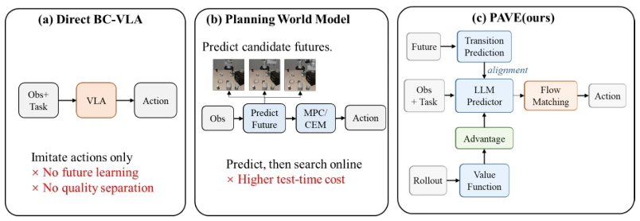
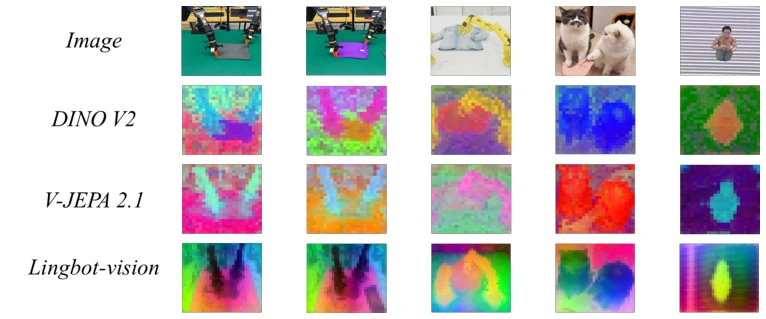

现有的 Vision-Language-Action (VLA) 模型虽然能直接生成动作，但标准的行为克隆（Behavior Cloning）存在两个致命短板。首先，它们缺乏对多时间尺度场景演变的显式描述，导致模型只学动作不学物理规律（Miao et al., 2026; Sun et al., 2026）。其次，部署过程中产生的轨迹质量参差不齐，好坏混在一起训练，导致模型既学到了有效动态，也学到了无效甚至有害的行为。虽然 JEPA-WAM 等方法引入了未来预测，但单一固定偏移量只能捕捉局部运动，无法覆盖长程任务进度（Lin et al., 2026）。另一方面，像π*0.6 这样的价值引导方法虽然能筛选数据，却未能显式提升策略的多时间尺度过渡表示（Physical Intelligence et al., 2025a）。PAVE 旨在解决这一矛盾：既要利用所有有效轨迹学习物理过渡，又要只执行高质量动作，实现“预测归预测，决策归决策”的解耦。
—

Figure 1: Conceptual positioning of PAVE. Predictive correctness and behavioral desirability are complementary, while both auxiliary modules remain training-time or offline components.
Figure 2: Overview of PAVE. Multi-horizon current–future alignment supplies training-only predictive supervision, while the offline value branch converts accumulated trajectories into advantage text that is concatenated with the task. The deployed path retains only the current-observation predictor and flow-matching action expert.
Figure 3: Representative qualitative trajectories in simulation (top) and on a real robot (bottom). Seven frames per row illustrate approach, interaction, and completion; the real-robot sequence is a qualitative demonstration rather than a quantitative evaluation.

Figure 4: Qualitative comparison of frozen visual encoders on matched input images. From top to bottom, the figure shows the source images followed by response maps from DINOv2, V-JEPA 2.1, and LingBot-Vision.